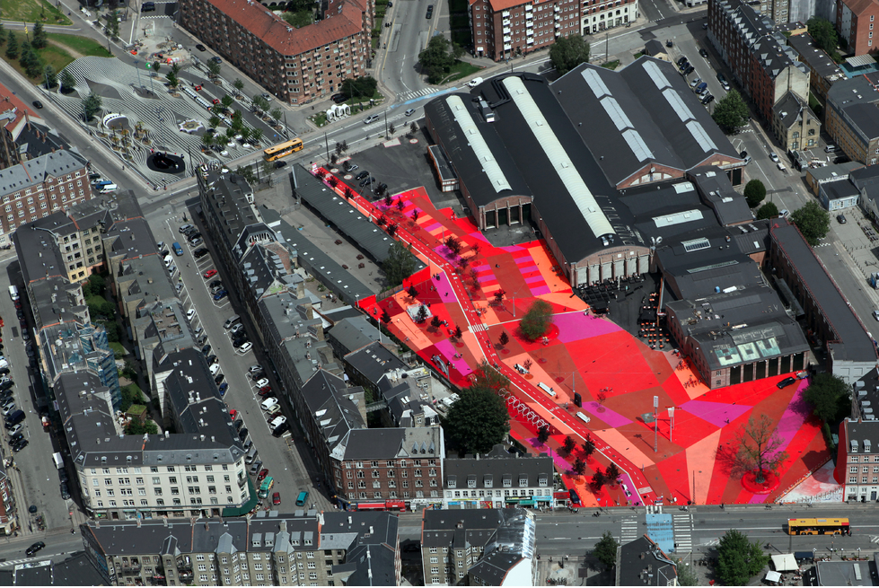
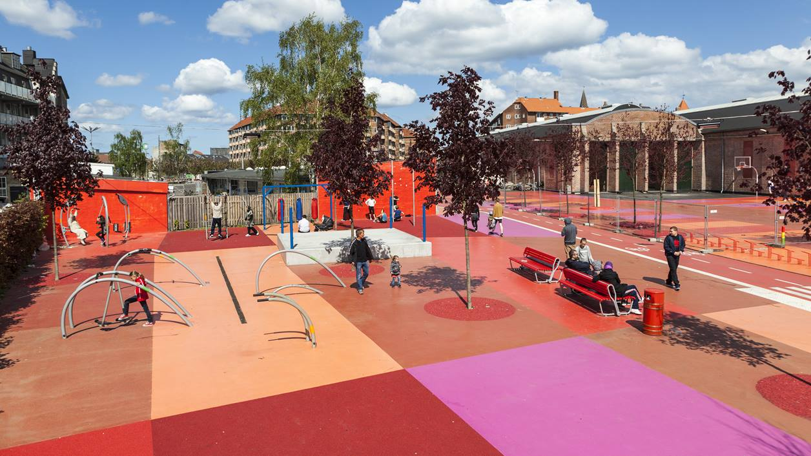
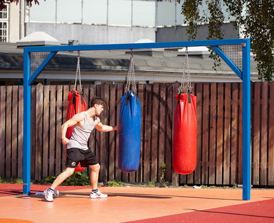

International Case Study | Superkilen Copenhagen

Source: INSERT URL
POPULATION
Ethnic Diversity
INSERT INFO HERE
Descendants of Immigrants
INSERT INFO HERE
Growing Population
INSERT INFO HERE
Density
INSERT INFO HERE
Median Age
INSERT INFO HERE
ECONOMY
Income
INSERT INFO HERE
Growing Gap
INSERT INFO HERE
TOURISM
Developing Tourism
INSERT INFO HERE
The Rise of 'Ghetto Tours'
INSERT INFO HERE
AREA
Total Area
30,000m3
Nørrebro District
INSERT INFO HERE
Copenhagen
INSERT INFO HERE
The Netherlands
INSERT INFO HERE
DESIGNED BY
Client:
Copenhagen Municipality
Commissioned by:
City of Copenhagen and Real Dania
Designed:
2009 - 2010 by Bjarke Ingels Group (BIG), Topotek 1 and Superflex
Completed:
2011
DESIGN LAYOUT OF SUPERKILEN
Total Area
Superkilen is a public park in an urban area. It is made up of 3 sections (the Red Square, the Black Market and the Green Park) that are all connected to each other in one long strip that stretches 1km long.
Source: http://www.akdn.org/architecture/project/superkilen
The Red Square
Consists of bright red, orange and pink concrete floor. Used mainly for sport as the strip has basketball rings and is not car accessible.
Source: https://realdania.dk/projekter/superkilen/nyheder/den-roede-plads-faar-ny-belaegning-i-2018_13062017

Source: https://www.dezeen.com/2012/10/24/superkilen-park-by-big-topotek1-and-superflex/
The Black Market
An area visually identifiable by the strips of white lines on the concrete strip. THis is a more relaxed area filled with a large fountain and a series of benches. It is an area where people can gather to have a bbq, play chess or meet up.

Image source: http://realdania.dk/projekter/superkilen#

Image source: http://realdania.dk/projekter/superkilen#

Image source: http://realdania.dk/projekter/superkilen#

Image source: http://realdania.dk/projekter/superkilen#

Image source: http://realdania.dk/projekter/superkilen#
The Green Park
A traditional park filled with a lot of greenery and a playground.

Image source: http://realdania.dk/projekter/superkilen#

Image source: https://www.dezeen.com/2012/10/24/superkilen-park-by-big-topotek1-and-superflex/
Government Housing
Housing buildings are found along the strip where Superkilen is located, which can make these areas, along with their colours look separate. But like much of the inhabitants in the area, they are connected all together because they are physically in that 1km strip that is designed for only bicycles to enter.
KEY SURROUNDINGS
Nørrebro Station
Google predicts it is a 4 minute walk (300m).

Image source: Google Maps
Nørrebro Bibliotek library
Google predicts it is a 2 minute walk (150m).
Image source: Google Maps
Hillerødgade Bad and Hal (public swimming pool)
Google predicts it is a 5 minute walk (400m).

Image source: Google Maps
Nørrebroparken (playground)
Google predicts it is an 8 minute walk (650m). This connects to the well-known Assistens Cemetery which houses the Hans Christian Andersen's headstone.

Image source: Google Maps
Nørrebroruten (the 'Green Path')
A popular bike path that runs through the centre of Nørrebro and briefly runs through Superkilen. The 'Green Park' is 10km long and is represented on the map as the thin green line.

Image source: Google Maps
'URBAN TRANSFORMATION' APPROACH
Approach
INSERT INFO HERE
Citizen Involvement
INSERT INFO HERE
Government & Organisations Involvement
INSERT INFO HERE